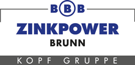

Die Datenbasis für Innovation bei Zinkpower
Bevor wir über KI sprechen, müssen wir erst eine solide Grundlage schaffen.
Digitalisierung ist nicht die Lösung – sie ist die Voraussetzung für alle zukünftigen Innovationen.
Auf Handy öffnen
Was: Microsoft 365 Stack – SharePoint (DMS), Power Apps (digitale Formulare), Power Automate (Workflows)
Warum: Infrastruktur wird gerade eingeführt – kein Zusatzbudget, keine neue Software, IT kennt das System bereits. Null Zusatzkosten, nahtlose Integration, skalierbar über alle Werke.
Was: Einheitliche Felder, Kategorien, Messgrößen für ALLE Werke
Warum: Ohne Standard entsteht digitales Chaos statt digitaler Ordnung
Was: Qualitätsdokumentation nach Verzinkung – weil: hohe Frequenz (20x/Schicht), audit-relevant, klar abgegrenzt und sofort in Power Apps umsetzbar
Warum: Fokus statt Überforderung. Erfolg zeigen, dann ausweiten
Orientierungsrahmen in 8 Monaten – kein fixes Kalender-Datum, sondern relativer Projektplan ab Startschuss.
Ziel: Erwartungen klären, Ängste verstehen
Kernfrage: "Was ist Ihr größter Pain Point bei der aktuellen Dokumentation?"
Botschaft: Keine KI-Revolution – erst mal digitales Papier
Ziel: Technische Rahmenbedingungen, IT-Kapazitäten
Kernfrage: "Welche Systeme laufen bereits? Wo sind Schnittstellen möglich?"
Botschaft: Low-Code-Lösungen bevorzugt, minimale IT-Belastung
Ziel: Audit-Anforderungen im Detail verstehen
Kernfrage: "Welche Nachweise werden beim Audit gefordert?"
Botschaft: Audit-Readiness als Hauptziel der ersten 8 Monate
Ziel: Prozesse verstehen, Schmerzpunkte identifizieren
Methode: Design Thinking – Co-Kreation statt Top-Down
Botschaft: "Ihr seid die Experten – ich brauche euer Wissen"
Ziel: Kritisches Wissen dokumentieren
Kernfrage: "Was würde fehlen, wenn Sie morgen nicht mehr da wären?"
Botschaft: Wissen sichern, nicht ersetzen – ihr werdet zu Mentoren
Ziel: 5-7 Early Adopters als Multiplikatoren gewinnen
Methode: Live-Demo des Tools, hands-on testen lassen
Botschaft: "Ihr formt das Tool – eure Feedback zählt"
Das stärkste Argument gegen Skepsis:
"Bevor wir überhaupt über KI reden können, müssen wir erst digitalisieren – und das dauert Jahre. Aktuell geht es nur um digitale Formulare statt Papier. Nicht mehr, nicht weniger."
Mitarbeiter nutzen das Tool nicht – fallen zurück zu Papier.
Management sieht keinen direkten monetären Vorteil.
Begrenzte IT-Kapazität verzögert Implementierung.
8 Monate sind knapp – Verzögerungen gefährden Ziel.
Ziel: NPS > 30 bei Nutzern
Frage: "Wie wahrscheinlich würden Sie das Tool einem Kollegen empfehlen?" (0-10 Skala)
Ziel: Positive Aussage wie:
"Ich habe jetzt Transparenz über Prozesse, die ich vorher nicht hatte."
Ziel: > 50 dokumentierte Best Practices
Schlüsselpersonen-Wissen wird digitalisiert und für alle verfügbar
✓ Mindestens 60% Login-Rate der Pilot-User-Group
Falls nicht erreicht: Sofortiges User-Feedback einholen, Tool anpassen
✓ Mindestens 3 positive Testimonials von Mitarbeitern
Falls nicht erreicht: Change Management intensivieren, Quick Wins kommunizieren
APPENDIX – für Rückfragen
Diese Sektion enthält Hintergrundinformationen, Annahmen und Details, die im Gespräch bei Bedarf vertieft werden können.
| Position | Kosten | Anmerkung |
|---|---|---|
| Infrastruktur | 0 € | Microsoft 365 bereits vorhanden |
| Software | 0 € | Power Apps, SharePoint, Power Automate inkludiert |
| Externer Setup-Support | ~8.000–12.000 € | Einmalig, 15–20 Personentage |
| Interne Kapazität DTI | ~15.000 € | Junior PM, 8 Monate, ~50% Auslastung |
| Schulungen & Workshops | ~3.000 € | Materialien, Moderationskosten |
| GESAMT (geschätzt) | ~26.000–30.000 € | Einmaliger Projektaufwand |
Zeitersparnis: 40% × ca. 45 Min/Tag × 15 Mitarbeiter × 220 Arbeitstage
= ca. 9.900 Stunden/Jahr
Bei Ø 25 €/h Personalkosten = ~247.500 € Potenzial/Jahr
Lückenlose Produktions- & Qualitätsdokumentation
Nachverfolgbarkeit jeder Charge (Traceability)
Qualitäts-Checklisten mit Zeitstempel & Prüfer
Schulungsnachweise für Mitarbeiter
Dokumentiertes Abweichungsmanagement (NOK-Fälle)
Schnelle digitale Abrufbarkeit aller Nachweise
(Digitale Prozesse / Gesamt-Prozesse) × 100
Basis: 15 dokumentationspflichtige Prozesse im Pilotwerk
Ziel: 12 davon digital = 80%
Baseline: Woche 2
Baseline Woche 2 vs. Messung Monat 6
Baseline-Messung: Woche 2 (2-Wochen-Durchschnitt)
Ziel-Messung: Monat 6 (2-Wochen-Durchschnitt)
Ziel: -40% (30 Min → 18 Min pro Charge-Dokumentation)
(Aktive User/Woche / Pilot-User gesamt) × 100
Gemessen via Power Apps Analytics Dashboard (wöchentlich)
Ziel: >70% nach 6 Monaten
Mitarbeiter fragen einfach: "Wie ist der Standardprozess für Charge XY?" – KI durchsucht alle digitalisierten Dokumente und Schichtberichte.
Basis: Digitale Schichtübergaben + DMS + Wissensdatenbank + Azure OpenAI auf SharePoint
Automatische Erkennung von Oberflächenfehlern bei verzinkten Teilen – Mitarbeiter fotografieren, KI warnt bei Anomalien.
Basis: Digitale Foto-Dokumentation + historische Qualitätsdaten + Power Apps Foto-Upload
IoT-Sensoren + KI erkennen Muster und warnen vor Anlagenausfällen, bevor sie passieren – spart Stillstandzeiten.
Basis: Digitalisierte Wartungsprotokolle + Prozessparameter + Power BI Dashboards
KI generiert audit-konforme Berichte auf Knopfdruck – keine wochenlange manuelle Datenzusammenstellung mehr.
Basis: Strukturierte digitale Produktions- & Qualitätsdaten + Power Automate + GPT-4 API
KI überwacht Badtemperatur, Zinkkonzentration, Behandlungszeiten – warnt bei Abweichungen bevor Qualitätsprobleme entstehen.
Basis: Digitalisierte Prozessparameter über Monate/Jahre + Azure Anomaly Detector
Alle Zinkpower-Werke nutzen einheitliche Messgrößen – KI erkennt Best Practices und schlägt Optimierungen vor.
Basis: Standardisierte Datenstruktur über alle Standorte + Power BI Cross-Plant Analytics